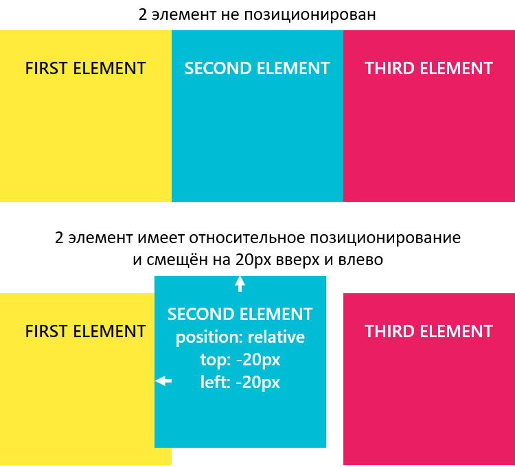

Базовый поток документа
HTML-документ состоит из большого количества элементов, вложенных друг в друга. Чтобы из этих элементов и CSS построить изображение страницы, их необходимо как-то в ней расположить. По умолчанию размещение всех элементов на странице осуществляется в нормальном или базовом потоке.
Что это значит? Во-первых, вывод элементов на страницу браузер осуществляет в том порядке, в котором они следуют в HTML коде.
<body>
<div>1</div>
<div>2</div>
<div>3</div>
</body>
Во-вторых, в коде элементы вложены друг в друга, и чтобы это учитывать при выводе используют так называемые воображаемые слои для отображения элементов. При этом слой элемента тем выше (ближе к нам), чем данный элемент является более вложенным в коде, т.е. глубже расположен в нём.
<body>
Этот элемент находится позади других элементов.
<div>
Этот вложенный элемент принадлежит воображаемому слою, который находится поверх слоя родителя.
<span>Этот элемент ещё ближе к нам, его слой располагается над слоем уже его родителя.</span>
</div>
</body>
В-третьих, положение элемента в потоке зависит от значения свойства display.
<body>
<div class="block-1">
<span class="inline-1">inline 1 </span>
<span class="inline-2">inline 2 </span>
<span class="inline-3">inline 3 </span>
<span class="inline-4">inline 4 </span>
</div>
<div class="block-2">
<span class="inline-1">inline 1 </span>
<span class="inline-2">inline 2 </span>
</div>
<div class="block-3">
<span class="inline-1">inline 1 <span>
<span class="inline-2">inline 2 </span>
<span class="inline-3">inline 3 </span>
</div>
</body>
Например, элементы, имеющее блочное отображение (display: block) отображаются в потоке как прямоугольные области, каждый из них на новой линии друг под другом сверху вниз.
Ширина элементов с блочным отображением по умолчанию равна доступной ширине родительского элемента, т.е. элемента, в который каждый из них непосредственно вложен. Высота их по умолчанию равна такой величине, которой будет достаточно, чтобы отобразить весь контент, который находится в каждом из них.
Элементы со строчным отображением (display: inline) выводятся иначе. Они в отличии от блочных элементов не размещаются каждый на новой строке, а следуют друг за другом слево направо. Если пространство справа закончилось, то они переносятся на следующую строку, а не на новую линию как элементы с блочным отображением.
Кроме block, inline есть и другие варианты отображения элементов, но все они располагаются в базовом потоке документа.
В CSS есть свойства, с помощью которых элементы можно «вырвать» из основного потока документа и задать им другое положение вне базового потока элементов.
К этим свойствам относятся position и float.
CSS-свойство position
CSS свойство position — это одно из свойств с помощью которого можно изменить базовое поведение элементов в потоке. Другими словами, данное свойство позволяет «выдернуть» любой элемент из потока документа и разместить его в другом месте относительно окна браузера или других элементов на веб-странице.
-
Свойство position имеет 5 значений:
- static (статичное позиционирование);
- relative (относительное);
- absolute (абсолютное);
- fixed (фиксированное);
- sticky (липкое).
static — это значение по умолчанию. Оно означает что элемент находится в базовом потоке.
Каждый элемент в потоке занимает определённую область. Но область элемента не всегда сохраняется за ним при его позиционировании.
Это, например, происходит при задании элементу position: absolute или position: fixed. В этом случае место не сохраняется за элементом. Другие элементы его «не видят» и располагаются, игнорируя его присутствие в коде.
Статичное позиционирование (static)
Свойство position со значением static элементам назначается по умолчанию. Это значение означает что элемент является не позиционированным, т.е. отображается как обычно (в потоке).
Явная установка элементу CSS-свойства position: static может понадобиться только в том случае, когда нужно переопределить другое значение position установленное элементу.
Установка CSS свойств для задания положения элемента left, top, right и bottom никакого влияния на него не оказывают, т.к. его местонахождение определяется потоком документа.
Пример выстраивания статично позиционированных элементов:
<body>
<div style="width: 200px; height: 100px; border: 1px solid black; background: green;"></div>
<div style="width: 300px; height: 150px; border: 1px solid black; background: red;"></div>
</body>
Относительное позиционирование (relative)
Установка относительного позиционирования элементу осуществляется посредством задания ему CSS свойства position: relative.
Относительно позиционированный элемент ведёт себя как элемент в потоке за исключением того, что его текущее положение можно при помощи определённых CSS свойств сместить. К этим CSS свойствам относятся left, top, right и bottom.
Например, для того чтобы элемент сдвинуть вверх или вниз относительного его исходного положения к нему нужно применить CSS свойство top или bottom:
position: relative;
/* для сдвига элемента вверх на 10px */
top: -10px; /* или bottom: 10px; */
/* для сдвига элемента вниз на 10px */
top: 10px; /* или bottom: -10px; */
Если одновременно установить top и bottom, то будет применено значение top, т.к. оно является более приоритетным, чем bottom:
position: relative;
/* элемент или элементы, к которым применяется эти стили будут сдвинуты на 15px вверх, а не на 10px как указано в bottom */
top: -15px;
bottom: 10px;
Для сдвига элемента вправо или влево используется CSS свойство left или right:
position: relative;
/* для сдвига элемента влево на 20px */
left: -20px; /* или right: 20px; */
/* для сдвига элемента вправо на 20px */
left: 20px; /* или right: -20px; */
Если одновременно установить left и right, то приоритетным будет значение, находящееся в left:
position: relative;
/* элемент или элементы, к которым применяется эти стили будут сдвинуты на 25px вправо, т.к. значение left более приоритетно чем right */
left: 25px;
right: -20px;
Для сдвига по двум осям нужно использовать top или bottom, и left или right:
position: relative;
/* стили для сдвига элементов вверх и влево на 5px */
top: -5px;
left: -5px;
Пример, в котором 2 элементу установим относительное позиционирование и сместим его на 20px вверх и влево относительно его исходного положения:
<div class="container">
<div class="element-1">FIRST ELEMENT</div>
<!-- элемент имеет относительное позиционирование и смещён на 20px вверх и влево -->
<div class="element-2" style="position: relative; top: -20px; left: -20px;">SECOND ELEMENT</div>
<div class="element-3">THIRD ELEMENT</div>
</div>

Если в некоторой области страницы оказываются несколько позиционированных элементов, то они перекрывают друг на друга в определённом порядке. При этом по умолчанию выше оказывается тот элемент, который ниже описан в коде. Но порядок перекрытия элементов (их положение перпендикулярное экрану, т.е. вдоль оси Z) можно изменить. Осуществляется в CSS это с помощью свойства z-index. z-index может принимать отрицательные и положительные целые число, auto и 0. Но, хорошей практикой является использование в качестве z-index чисел из диапазона 0-9999.
При этом чем больше у элемента значение z-index, тем ближе он располагается к нам, и, следовательно, перекрывает все элементы в данной области, у которых значение z-index меньше.
Абсолютное позиционирование (absolute)
Установка абсолютного позиционирования элементу осуществляется посредством задания ему position: absolute.
Этот тип позиционирования позволяет разместить элемент именно там, где вы хотите.
Позиционирование выполняется относительно ближайшего позиционированного предка.
<div id="id-1" style="position: absolute">
<div id="id-2" style="position: relative">
<div id="id-3" style="position: absolute">
...
</div>
</div>
</div>
Под позиционированным элементом понимается элемент с position, равным relative, absolute, fixed или sticky.
В этом примере позиционирование элемента #id-3 будет выполнять относительно #id-2, т.к. он является позиционированным и является по отношению к нему более близким предком.
Если данный элемент не был бы позиционированным, то позиционирование #id-3 выполнялось бы относительно #id-1:
<div id="id-1" style="position: absolute">
<div id="id-2">
<div id="id-3" style="position: absolute">
...
</div>
</div>
</div>
Если среди предков у элемента с position: absolute нет позиционированного элемента, то в этом случае он будет позиционироваться относительно HTML страницы, т.е. элемента body.
Когда элементу устанавливаем position: absolute без указания CSS-свойств (top, left, right и bottom), определяющих его положение, он будет находиться в том месте, в котором он был бы расположен, если бы находился в потоке (при этом при вычислении его положения учитываются только элементы, расположенные до него в коде и находящиеся в потоке).
При этом другие элементы его видеть не будут, и, следовательно, они будут расположены на странице, не обращая никакого внимание на него.
<div class="container">
<div class="element-1">FIRST ELEMENT</div>
<!-- элемент имеет абсолютное позиционирование и ему не установлены CSS-свойства top, bottom, left и right -->
<div class="element-2" style="position: absolute;">SECOND ELEMENT</div>
<div class="element-3">THIRD ELEMENT</div>
</div>
CSS-свойства для управления положением абсолютно позиционированного элемента работают по-другому чем с position: relative.
CSS-свойства top, bottom, left и right задают положение элемента относительно ближайшего позиционированного предка или body, если такого предка нет.
Установить ширину (высоту) абсолютно позиционированному можно с помощью установки ему двух координат top и bottom (left и right).
Если элементу одновременно установить top, bottom и height, то предпочтение будет отдано top и height.
Абсолютное позиционирование применяется очень часто совместно с относительным позиционированием в дизайнерских целях, когда необходимо разместить различные элементы относительного друг друга, так же может применяться для создания выпадающих меню, разметки сайта и т.д.
<body>
<div style="width: 200px; height: 100px; border: 1px solid black; background: green;"></div>
<div style="width: 300px; height: 200px; position: absolute; top: 50px; left: 100px; border: 1px solid black; background:red;"></div>
</body>
Фиксированное позиционирование (fixed)
Задание элементу фиксированного позиционирования осуществляется посредством установки ему position: fixed.
Фиксированное позиционирование похоже на абсолютное, но в отличии от него оно всегда привязывается к краям окна браузера (viewport), и остаётся в таком положении даже при скроллинге страницы.
Фиксированное позиционирование применяется для закрепления на странице навигационных меню, кнопки «вверх», панелей с социальными кнопками и многого другого.
<body>
<div style="width: 200px; height: 2000px; border: 1px solid black; background: green;"></div>
<div style="width: 600px; height: 200px; position: fixed; top: 100px; left: 100px; border: 1px solid black; background:red;"></div>
</body>
Совместное использование относительного и абсолютного позиционирования
Относительное позиционирование очень часто используется вместе с абсолютным позиционированием.
Рассмотрим варианты:
-
Если расположить блоки с абсолютным позиционированием в блок с относительным, то расстояния будут уже задаваться не от края окна браузера, а от границ относительного блока.
<body> <!-- Зелёный блок с относительным позиционированием --> <div style="width: 400px; height:400px; position:relative; top:50px; left:50px; border: 1px solid black; background:green;"> <!-- Красный блок с абсолютным позиционированием --> <div style="width: 100px; height:100px; position:absolute; top:50px; left:50px; border: 1px solid black; background:red;"></div> <!-- Синий блок с абсолютным позиционированием --> <div style="width: 100px; height:100px; position:absolute; bottom:50px; right:50px; border: 1px solid black; background:blue;"></div> </div> </body> -
Например: для создания фиксированных макетов состоящих из 3 блоков, выровненных по верхнему краю. Установим высоту "400px" относительному блоку для наглядности .
<body> <div style="width: 800px; height:400px; position:relative; border: 1px solid black; background:green;"> <div style="width: 200px; height:200px; position:absolute; left:0px; border: 1px solid black; background:red;">Левый блок</div> <div style="width: 400px; height:200px; position:absolute; left:200px; border: 1px solid black; background:blue;">Основной блок</div> <div style="width: 200px; height:200px; position:absolute; left:600px; border: 1px solid black; background:red;">Правый блок</div> </div> </body> -
Дополнительно к блокам можно применять свойство z-index, которое предназначено для позиционирования элементов по оси Z. Чем больше значение свойства z-index, тем ближе элемент расположен к нам, и наоборот, чем меньше значение, тем дальше расположен элемент от нас.
<body> <div style="width: 300px; height:300px; position:relative; border: 1px solid black; background:green;"> <div style="width: 100px; height:100px; position: absolute; z-index: 1; left: 50px; top: 50px; border: 1px solid black; background: red;"></div> <div style="width: 100px; height: 100px; position: absolute; z-index: 2; left: 100px; top: 100px; border: 1px solid black; background: blue;"></div> <div style="width: 100px; height: 100px; position: absolute; z-index: 3; left: 150px; top: 150px; border: 1px solid black; background: yellow;"></div> </div> </body>